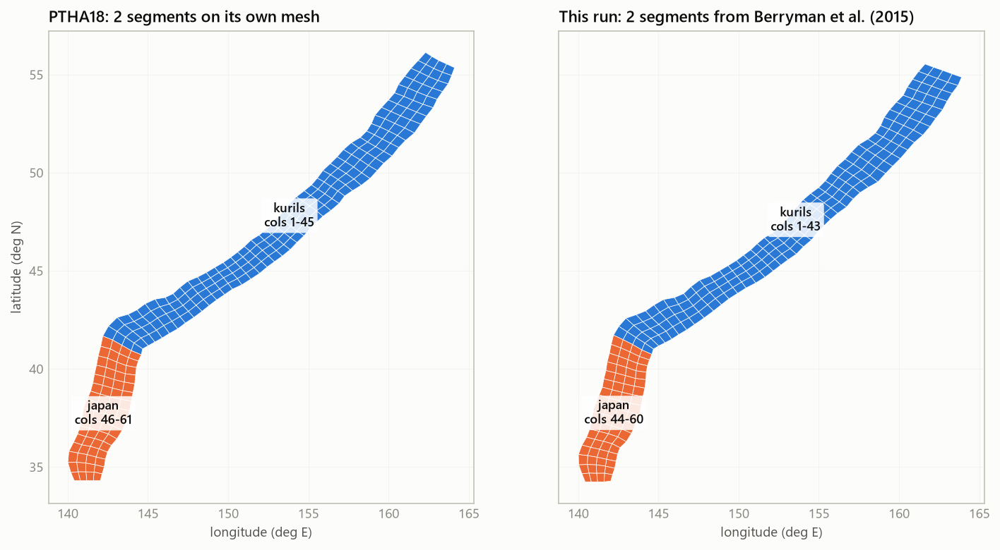
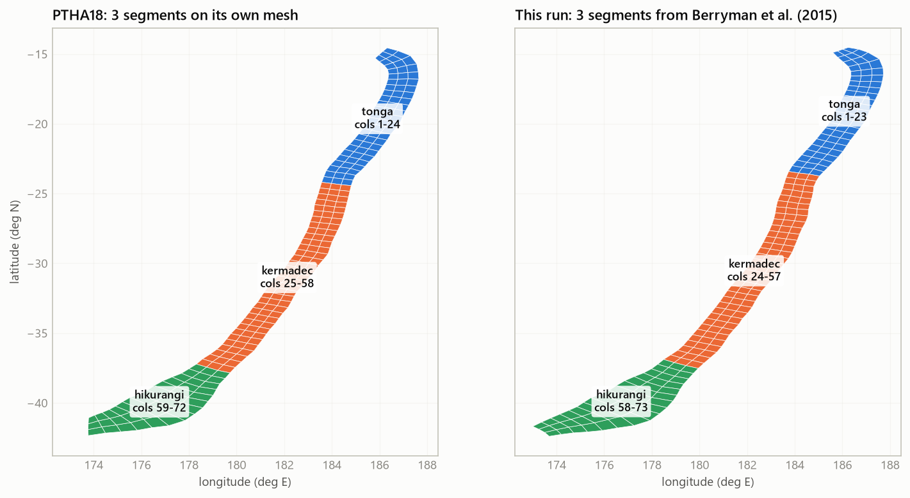

Segmented vs unsegmented (LEVEL 0)
A subduction zone can be modelled as one long fault that may break from end to end (unsegmented), or as several stretches that each break on their own (segmented). PTHA18 does not choose between them: on its large zones it gives each model half the weight. The flag --segmented true does the same here, using PTHA18's method and public data only. This page explains what segmentation is, how to run it, how the segments are built and how the results are checked.
--segmented true; without it the zone runs as one unsegmented modelWhat segmentation is
Several shorter faults produce more moderate earthquakes than one long fault, but none of them is long enough for the largest ruptures, because each segment's largest possible earthquake is set by its own size. Segmenting therefore tends to raise the rate of moderate magnitudes and to lower the rate of the largest ones. How much depends on how long the segments are and how fast each one converges.
Unsegmented or segmented: what changes
| Unsegmented (default) | Segmented (--segmented true) | |
|---|---|---|
| Models run | the zone, weight 1 | the zone (0.5) and every segment (0.5 each, summed) |
| Segment boundaries | none | Berryman et al. (2015) Table 3.1's segment end points (the default), or Bird (2003)'s plate pairs with --segment-boundaries bird. Never PTHA18's own table. |
| Step 5 (GCMT) | the zone's catalogue | also one catalogue per segment, by PTHA18's rule on the segment's own cells |
| Step 6 (input) | "segments": {} | a segments block: each segment's columns, GCMT events and its own Berryman row |
| Step 7 (engine) | the zone's logic tree | the zone's logic tree and one for every segment; the zone's scenario rates |
| Step 8 (official, needs R) | PTHA18's unsegmented branch | PTHA18's own segmented model, if PTHA18 segments the zone |
| Step 9 (report) | a box at the top says "UNSEGMENTED RUN" | a box at the top says "SEGMENTED RUN" and lists the segments; a LEVEL 0 section (bar, map, tables, curves) and more series on the rate chart (one per segment, the union and the mix: five for kermadectonga2), whose band becomes the zone mix's |
Only zones that Berryman et al. (2015) divide into segments can be segmented: kermadectonga2, kurilsjapan, izumariana, ryuku, sunda2, southamerica, alaskaaleutians, newhebrides2, solomon2, mexico, newguinea2, manus and hellenic2 (ZONE_BERRYMAN_SEGMENTS in lib/berryman_params.py; the names without the final 2 are accepted too). For any other zone, or when the mesh reaches only one of the segments, step 5 prints "a single segment here ... so there is nothing to segment", step 6 prints "a single segment: running this zone unsegmented" and writes no segments, and the run stays unsegmented.
The two options of generate.py are --segmented {true,false} (default false) and --segment-boundaries {berryman,bird} (default berryman; only used with --segmented true). Both use public data only, so a segmented run keeps the --ptha false promise.
How to run it
# unsegmented python ptha_python/generate.py kermadec --zone kermadectonga2 --folder kermadectonga2 --ptha false python kermadectonga2/steps/step_total.py --skip-hs --skip-official # segmented: the same zone with one more flag (step 8, if you run it, then runs PTHA18's segmented model) python ptha_python/generate.py kermadec --zone kermadectonga2 --folder kermadectonga2_segmented --ptha false --segmented true python kermadectonga2_segmented/steps/step_total.py --skip-hs --skip-official # kurilsjapan: steps 1-3 first (step 3 flags the Izu-Bonin tail), then the clipped run python ptha_python/generate.py kuril --zone kurilsjapan --folder kurilsjapan_segmented --ptha false --segmented true python kurilsjapan_segmented/steps/step1_fetch_slab2.py python kurilsjapan_segmented/steps/step2_build_grid.py python kurilsjapan_segmented/steps/step3_convergence.py python kurilsjapan_segmented/steps/step_total.py --skip-hs --auto-clip # only the official comparison again, after steps 1-7 python kermadectonga2_segmented/steps/step8_official.py python kermadectonga2_segmented/steps/step9_report.py
The kurilsjapan mesh runs on past the Japan Trench onto the Izu-Bonin Trench, which is a separate zone with no earthquakes of its own. Berryman's Japan segment ends at 34.7°N, so without a clip those columns join the Japan segment (the last segment is stretched to the mesh's end). With Bird's boundaries they become a segment of their own. Either way they are not part of the zone. --auto-clip removes them; check the segments before trusting them.

Step 8 needs R with rptha, as for any official comparison. To compare the two models of one zone, run both folders and open each report. The unsegmented branch of a segmented run is also written as report_unsegmented.html, so the two can be read side by side in one folder.
How a segment is built
The method is PTHA18's, checked line by line against rptha (compute_rates_all_sources.R, gcmt_subsetter.R). A segment is a stretch of the zone, not a source of its own:
| What the segment gets | How (as in PTHA18) | Where in the code |
|---|---|---|
| columns | the along-strike columns between the segment's two trench end points in Berryman's Table 3.1, each end point placed on the mesh's top edge. rptha's is_in_segment then selects them. | steps 5 and 6; lib/segmentation.py berryman_segments() |
| scenarios | the zone's whole scenario table. Each scenario's probability is weighted by the part of it that lies inside the segment, so a rupture across a boundary takes rate from every segment it touches. | engine, logic_tree/run_logic_tree.py |
| area, mean dip, Mw max range | from its own cells | engine |
| convergence | the area-weighted Bird convergence of its own cells, so each segment has its own value (not the zone's) | engine (compute_rates_all_sources.R 406-412) |
| GCMT events | the zone's selection rule applied to its own cells and unit sources. An event near a boundary can count in both neighbours. The engine refuses to run a segment that would inherit the zone's whole catalogue. | step 5 |
| coupling and Mw max observed | its own Berryman et al. (2015) row, the same row PTHA18 gives it. Mw max observed is never below the segment's own largest GCMT event. | step 6; lib/berryman_params.py |
| b-value and edge multiplier | the zone's (the segment inherits the zone's edge multiplier, because edge events have too little leverage on a segment to fit it stably) | step 6; engine |
| the zone's scenario rates | 0.5 x unsegmented + 0.5 x every segment, scenario by scenario, with the percentiles of PTHA18's partial-segmentation step | engine, written to scenario_rates_<zone>_source_zone.csv |
With --segment-boundaries bird, a segment is instead a run of columns that share a Bird plate pair. Each such segment takes the Berryman row or rows that its plates name (BIRD_SEGMENT_TO_BERRYMAN in lib/berryman_params.py).
A worked example: kermadectonga2
The numbers below are from a run with --segmented true (every other option at its default). The zone has 73 columns and 219 cells. The step 7 log prints, for each representation, its columns, its own area, mean dip and convergence, and its own Mw_max anchor:
| Representation | Columns | Cells | Area (km2) | Mean dip | Convergence (mm/yr) | Coupling min / pref / max | mw_max_observed | Mw_max anchor | GCMT events | Rate at Mw 7.2 (/yr) |
|---|---|---|---|---|---|---|---|---|---|---|
| zone (unsegmented) | 1-73 | 219 | 542,856 | 15.43 | 99.16 | 0.21 / 0.31 / 0.72 | 8.1 | 8.15 to 9.7569 | 9 | 0.2250 |
_tonga | 1-23 | 69 | 161,294 | 15.87 | 171.39 | 0.1 / 0.2 / 0.7 | 8.0 | 8.05 to 9.4408 | 3 | 0.0946 |
_kermadec | 24-57 | 102 | 226,120 | 16.69 | 94.20 | 0.2 / 0.3 / 0.75 | 8.1 | 8.15 to 9.5949 | 6 | 0.1503 |
_hikurangi | 58-73 | 48 | 155,441 | 12.15 | 31.42 | 0.4 / 0.54 / 0.7 | 8.0 | 8.05 to 9.4239 | 0 | 0.0341 |
The Mw_max lower end is each representation's mw_max_observed plus 0.05, so the zone's lowest value is 8.1 + 0.05 = 8.15 and the Tonga and Hikurangi ones 8.0 + 0.05 = 8.05. The zone's mw_max_observed is the larger of Berryman's value for the zone (8.1) and the largest GCMT event (7.999); a segment's is the larger of its own largest GCMT event and the Mmax-min of its own Berryman row (Tonga 8, Kermadec 8.1, Hikurangi 8). Hikurangi has no GCMT event in the window (0 events), so its value comes from Berryman's row alone; the engine accepts a segment with no events because its input says so explicitly.
How segmenting moves the zone's answer in this run (exceedance rate per year, from rate_curves.csv):
| Unsegmented (0.5) | Union of segments (0.5) | Union / unsegmented | Zone (the mix) | |
|---|---|---|---|---|
| Mw 7.2 | 0.2250 | 0.2790 | +24.0% | 0.2520 |
| Mw 8.0 | 0.04023 | 0.04648 | +15.5% | 0.04336 |
| Mw 8.8 | 0.00558 | 0.00447 | -19.9% | 0.00503 |
| Mw 9.2 | 0.00126 | 0.00067 | -47.0% | 0.00097 |
The union is above the unsegmented curve at small magnitudes and falls below it from Mw 8.44 on. The zone's rate is 0.5 times the unsegmented column plus 0.5 times the union column (at Mw 7.2: 0.5 x 0.2250 + 0.5 x 0.2790 = 0.2520). Each segment keeps the zone's edge multiplier, 7.1384, and the zone's 3,075 scenarios.
Where the boundaries fall
Berryman et al. (2015) Table 3.1 gives, for every segment, the longitude and latitude of both ends of its trench (Appendix A: Left_E_LONG, Left_N_LAT, Right_E_LONG, Right_N_LAT). For kermadectonga2 the three segments are:
| Berryman segment | Plate pair | From (lon, lat) | To (lon, lat) | Coupling min / pref / max | Mw max min |
|---|---|---|---|---|---|
| Hikurangi | PA\HF | 175.503, 42.059°S | 179.838, 37.476°S | 0.4 / 0.54 / 0.7 | 8.0 |
| Kermadec | PA\KE | 179.838, 37.476°S | -174.985, 23.750°S | 0.2 / 0.3 / 0.75 | 8.1 |
| Tonga | PA\TO | -174.985, 23.750°S | -173.407, 14.584°S | 0.1 / 0.2 / 0.7 | 8.0 |
lib/segmentation.py berryman_segments() places each end point on the mesh's top edge, and puts every boundary at the column edge nearest to the end point that two neighbouring segments share. The first and last segments are stretched to the mesh's ends. A segment whose trench lies beyond the mesh gets no columns and is left out.
These are the segments PTHA18 used, and the table is taken as published. PTHA18 sometimes merges Berryman's segments (for example Patagonia North and South in southamerica, and the five eastern segments of alaskaaleutians, Shumagin to Yakataga) and adds an Arakan segment to sunda2 that Table 3.1 does not have. This code keeps Berryman's segments as Table 3.1 gives them. On a given mesh the boundaries can therefore sit a column or two away from PTHA18's, because the mesh itself differs. The check that compares them is described under What is checked.

The Bird alternative. Berryman placed most segment ends where the plate pair changes (Appendix A), so the boundaries from Bird's plate pairs, selected with --segment-boundaries bird, often land nearby. Bird does not have a plate pair for every segment, though. On kermadectonga2, Bird's table has no plate for the Hikurangi forearc, so the Bird boundaries give fewer segments than Berryman's.
What it changes
Segmenting changes the answer by an amount that depends on the zone, on its segments and on the magnitude. The clearest way to see it is to run both folders of one zone and compare their exceedance rate curves:
outputs/rate_curves.csvof the segmented run has one column per segment, the union of the segments and the zone's mix. Its unsegmented column is the one to compare with the unsegmented run.- The report of a segmented run shows the same comparison in its LEVEL 0 section, with the unsegmented branch, the union, the mix and each segment.
- On the zones checked against PTHA18 (Validation), the unsegmented branch and the segmented mix are both within the tolerance of PTHA18's published results.
Every difference between the two segmented models is an input difference, that is, the boundaries and what follows from them. With PTHA18's own inputs the engine reproduces PTHA18's segmented results, so the method itself is not what moves the answer.
In the report
A segmented run's report.html has a LEVEL 0 section after the exceedance-rate curve. It shows each model's segments along the trench (figures/segments_map.png; the PTHA18 panel, its own segments on its own mesh, is drawn only when step 8 has run), a table per segmentation (columns, convergence, coupling, Mw max observed, GCMT events and the rate at Mw 7.2), this run against PTHA18 for the unsegmented branch, the union and the mix, and a chart of every segment, the union and the mix. The main rate chart gains each segment, the union and the mix, and its band becomes the zone mix's. Every other block (step cards, TVD, edge fit, comparison table) shows the unsegmented branch. Reading report.html explains each block.
Files a segmented run writes
| File | What it holds |
|---|---|
outputs/segmentation.csv | the LEVEL 0 weights: the unsegmented zone at 0.5 and each segment at 0.5 (the union is a sum) |
outputs/rate_curves.csv | one column per segment, exceedance_rate_union_of_segments and the zone's mix |
outputs/scenario_rates_<zone>_<segment>.csv, logic_tree_branches_<zone>_<segment>.csv, conditional_prob_<zone>_<segment>.csv, integrated_slip_<zone>_<segment>.csv | each segment's own scenario rates, 32,000 branches, conditional probabilities and integrated slip, on the zone's scenario table |
outputs/scenario_rates_<zone>_source_zone.csv | every scenario's rate for the whole zone (the mix), as PTHA18 publishes rate_annual |
outputs/exceedance_rate_percentiles.csv | the whole zone's percentiles (the mix) |
outputs/exceedance_rate_percentiles_unsegmented.csv | the unsegmented branch's own band. report_unsegmented.html is built on it. |
outputs/logic_tree_summary.csv | the summary rows of the zone and of each segment |
data/gcmt/<zone>_gcmt_subset_<segment>.csv, data/gcmt/segments.json | the earthquakes of each segment, and the segment definitions (key, plate pair, Berryman rows, columns, number of events) |
outputs_official/ptha18_reference/official_segments.json | PTHA18's segments, as step 8 ran them |
outputs/exports/ | mesh_cells.csv and convergence_profile.csv with a segment column, and scenario_rates_source_zone.csv (a copy of the zone's scenario rates) |
report.html, report_unsegmented.html | the segmented view and the unsegmented branch alone, linked by a switch at the top of each |
figures/segments_map.png | the cells coloured by segment, and PTHA18's beside them when step 8 has run |
outputs/figures/ | 23 figures for kermadectonga2: the per-representation figures of the zone and of each segment (list) and the three run-level ones |
The complete list of files, with the ones that every run writes, is in Reference.
What is checked
Each check is run by validation/validate_against_ptha18.py, one check at a time or all of them. Each compares this code with files that PTHA18 published:
| Check | What it compares |
|---|---|
segmentation | Bird's segments tile each example mesh. The check prints them beside PTHA18's; it is informational. |
berryman_segments | Berryman's end points placed on PTHA18's own mesh, against PTHA18's boundary indices, for 9 zones. Passes when each boundary lands within 2 columns of PTHA18's wherever both split the zone. |
official_segments | the engine on PTHA18's own segmented input against PTHA18's tree of the zone and of every segment, for 7 zones. |
events_segmented | every scenario's rate and its five percentiles, on the same 7 zones, against PTHA18's published rate_annual columns. |
gcmt | the GCMT selection rule applied to PTHA18's mesh, against the events PTHA18 selected, for the zone and each of its segments. |
python ptha_python/validation/validate_against_ptha18.py berryman_segments official_segments events_segmented segmentation
The check needs PTHA18's reference files, which are described in Validation.